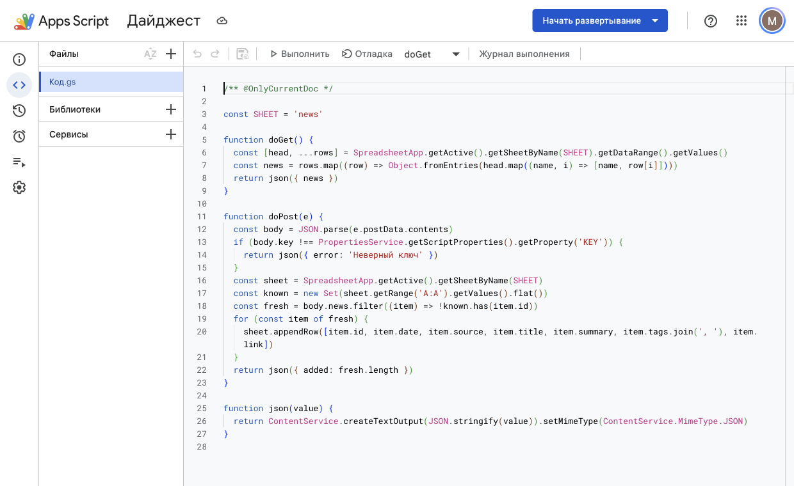
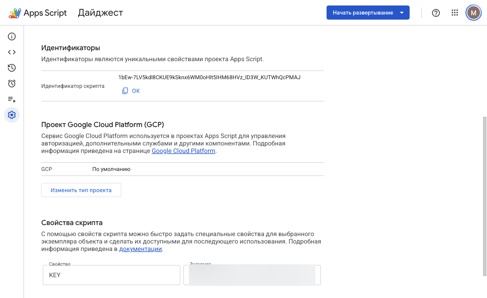
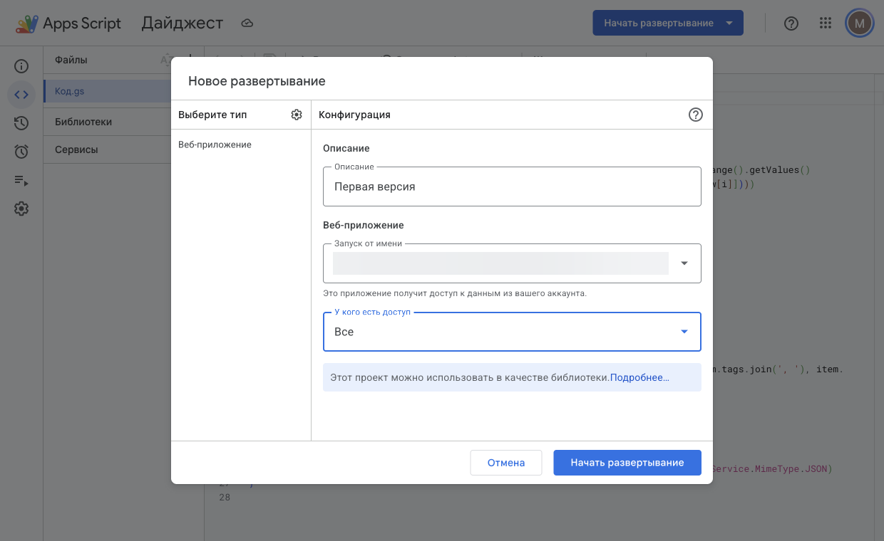
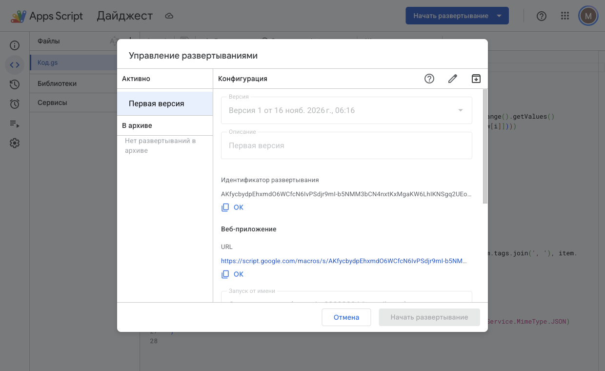
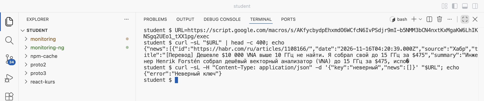
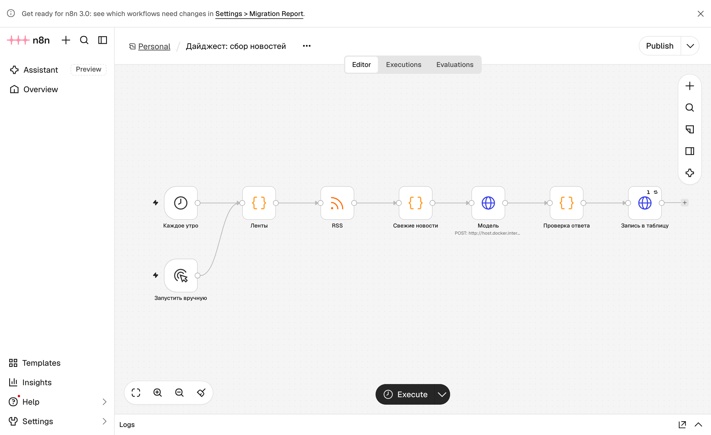
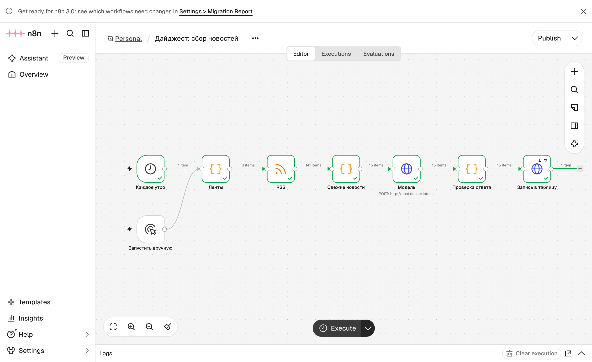
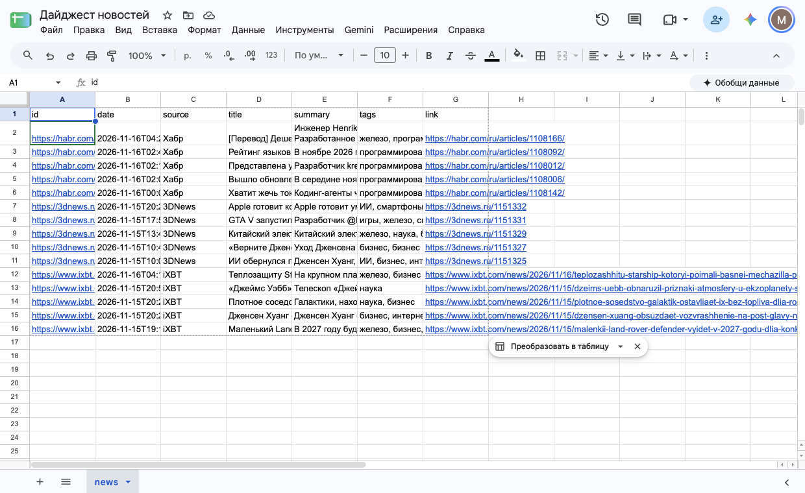

Справочник по Angular и React · модуль 4 · работа с ИИ-агентом и обзор Angular
А4
Сбор новостей
и вечерний дайджест
На этой странице собирается автоматизация для проекта модуля 4. Каждое утро n8n берёт свежие новости из трёх лент RSS, модель в Ollama пересказывает каждую в двух предложениях и ставит теги, а новости записываются в Google Таблицу. Таблицу читает страница дайджеста, вечером n8n отправляет список новостей в Telegram. Между n8n и таблицей стоит маленькая программа на Google Apps Script: она работает на серверах Google, бесплатно и без своего сервера.
- Категория
- Автоматизация, n8n, Google Apps Script, RSS
- Уровень
- Начальный
- Что понадобится
- Аккаунт Google, Docker и n8n из модуля 1, Ollama с моделью
qwen3:4b-instructиз главы 4.3, бот Telegram из модуля 1 - Результат
- Таблица «Дайджест новостей» и веб-приложение Apps Script; процессы n8n «Дайджест: сбор новостей» и «Дайджест: вечером в Telegram»
§1Как устроена автоматизация
РазбираемсяГде живут данные и кто их пишет
В редакции утром корреспонденты приносят заметки, редактор сокращает каждую до абзаца, а выпускающий вешает готовые абзацы на стенд в холле. Читатели подходят к стенду в любое время. Вечером секретарь рассылает подписчикам список того, что появилось за день.
У стенда в редакции стоит вахтёр: повесить заметку может только выпускающий. В нашей схеме вахтёр — секретный ключ, без которого запись в таблицу не принимается.
В модуле 3 данные монитора хранились файлом в репозитории, а в модуле 2 — в PocketBase на вашем компьютере. Дайджесту нужно хранилище, которое доступно из интернета: страница опубликована на GitHub Pages и должна читать новости из интернета. Здесь таким хранилищем будет Google Таблица. Сама таблица страницам в интернете ничего не отдаёт, поэтому рядом с ней работает Google Apps Script. Это среда Google для маленьких программ на JavaScript: они выполняются на серверах Google и работают с таблицами, документами и почтой.
Путь новости
Сплошные стрелки — утренний процесс и чтение страницей, пунктир — вечерний процесс.
На схеме слева направо идёт утренний путь новости. n8n читает ленты, отбирает свежие и для каждой спрашивает модель. Затем n8n отправляет все новости одним запросом POST скрипту Apps Script, и тот дописывает новые строки в таблицу. Скрипт отвечает и на запрос GET: возвращает все строки в JSON. Этим пользуются страница дайджеста и вечерний процесс n8n. У таблицы один вход для записи — с ключом — и один выход для чтения, открытый всем.
Начнём с таблицы и скрипта: без них n8n некуда писать.
§2Таблица и Apps Script
ДелаемТаблица
- Создайте таблицу
Откройте sheets.new — создастся пустая таблица. Назовите её «Дайджест новостей» (щелчок по названию слева вверху), а лист внизу —
news(двойной щелчок по «Лист1»). - Впишите заголовки
В первую строку, по одному в ячейку от A1 до G1:
id,date,source,title,summary,tags,link.Скрипт будет искать колонки по этим именам, а страница получит их как поля новости.
id— уникальный номер новости; им будет ссылка на неё.
РазбираемсяВеб-приложение из двух функций
Скрипт Apps Script привязан к таблице и открывается из её меню. Если в скрипте есть функции doGet и doPost, его можно опубликовать как веб-приложение. Google даст адрес: на запрос GET по нему ответит doGet, на POST — doPost. Это бессерверная функция: код есть, а сервера, который нужно запускать и обновлять, у вас нет.
ДелаемСкрипт
- Откройте редактор
В таблице: Расширения → Apps Script. Откроется редактор с файлом
Код.gsи пустой функциейmyFunction. Назовите проект «Дайджест» (щелчок по «Проект без названия»). - Вставьте код
Замените содержимое
Код.gsкодом ниже и сохраните: Ctrl+S.Apps Script · Код.gs /** @OnlyCurrentDoc */ 1 const SHEET = 'news' function doGet() { 2 const [head, ...rows] = SpreadsheetApp.getActive().getSheetByName(SHEET).getDataRange().getValues() const news = rows.map((row) => Object.fromEntries(head.map((name, i) => [name, row[i]]))) 3 return json({ news }) } function doPost(e) { const body = JSON.parse(e.postData.contents) if (body.key !== PropertiesService.getScriptProperties().getProperty('KEY')) { 4 return json({ error: 'Неверный ключ' }) } const sheet = SpreadsheetApp.getActive().getSheetByName(SHEET) const known = new Set(sheet.getRange('A:A').getValues().flat()) 5 const fresh = body.news.filter((item) => !known.has(item.id)) for (const item of fresh) { sheet.appendRow([item.id, item.date, item.source, item.title, item.summary, item.tags.join(', '), item.link]) } return json({ added: fresh.length }) } function json(value) { return ContentService.createTextOutput(JSON.stringify(value)).setMimeType(ContentService.MimeType.JSON) 6 }
- 1
Пометка: скрипт работает только с той таблицей, к которой привязан. Без неё Google при публикации попросит доступ ко всем таблицам вашего аккаунта.
- 2
doGetчитает весь лист: первая строка — заголовки, остальные — новости. - 3
Каждая строка превращается в объект:
{ id: …, date: …, title: … }— имена полей берутся из заголовков. - 4
Запись только с ключом. Сам ключ хранится в свойствах скрипта — их задаём ниже.
- 5
Все уже записанные
idиз колонки A. Новость, которая уже есть, второй раз не добавляется: утренний процесс можно запускать повторно. - 6
Ответ в формате JSON, как у обычного сервера.

Код.gs в редакторе Apps Script - 1
- Задайте ключ
Придумайте ключ — длинную случайную строку, например из 32 цифр и латинских букв. Слева в редакторе откройте «Настройки проекта» (шестерёнка), внизу страницы — «Добавить свойство скрипта». Свойство —
KEY, значение — ваш ключ. Нажмите «Сохранить свойства скрипта». Сохраните ключ у себя: он понадобится n8n.
Свойство KEY; значение на кадре скрыто
Ключ хранится в свойствах скрипта по той же причине, по которой токен бота в модуле 3 хранился в секретах репозитория. Код можно показать, переслать, опубликовать; ключ должен оставаться у вас.
Скрипт написан. Чтобы его можно было вызвать по адресу, его нужно опубликовать.
§3Публикация веб-приложения
ДелаемНовое развертывание
- Откройте окно развертывания
В редакторе кода нажмите «Начать развертывание» → «Новое развертывание». В окне нажмите шестерёнку рядом с «Выберите тип» и выберите «Веб-приложение».
- Заполните настройки
Описание — «Первая версия». «Запуск от имени» — от вашего имени: скрипт будет работать с таблицей с вашими правами. «У кого есть доступ» — «Все»: и страница, и n8n обращаются к скрипту без входа в Google.

Настройки веб-приложения Нажмите «Начать развертывание».
- Разрешите доступ
Google попросит разрешить скрипту доступ к данным: «Предоставить доступ» → выберите аккаунт. Появится предупреждение «Google hasn't verified this app»: так Google предупреждает о любом скрипте, который не прошёл его проверку, в том числе о вашем собственном. Нажмите Advanced → «Go to Дайджест (unsafe)».
На последнем экране прочитайте, к чему просят доступ. Должно быть «View and manage spreadsheets that this application has been installed in» — только таблица, к которой привязан скрипт. Нажмите Continue.
- Скопируйте адрес
В окне «Развертывание обновлено» скопируйте URL веб-приложения — он оканчивается на
/exec.
Адрес веб-приложения — URL в разделе «Веб-приложение»
На экране согласия — «See, edit, create, and delete all your Google Sheets spreadsheets». Значит, в коде нет пометки /** @OnlyCurrentDoc */ в первой строке. Нажмите Cancel, добавьте пометку, сохраните и разверните заново. Давать скрипту больше прав, чем ему нужно, не стоит: ключ может утечь, и тогда пострадают все таблицы аккаунта.
ДелаемПроверяем адрес
- Проверьте в терминале
Подставьте свой адрес в первую строку.
Терминал URL=https://script.google.com/macros/s/…/exec curl -sL "$URL" | head -c 400; echo curl -sL -H "Content-Type: application/json" -d '{"key":"неверный","news":[]}' "$URL"; echo
Чтение работает, запись без ключа отклонена -sубирает индикатор загрузки,-Lследует перенаправлению,head -c 400оставляет первые 400 знаков ответа,echoпереводит строку. Первый запрос — чтение: пока таблица пустая, ответ{"news":[]}; на кадре он снят после первого сбора, поэтому в нём уже новость. Второй — запись с неверным ключом:{"error":"Неверный ключ"}. Запись с настоящим ключом проверит процесс n8n в §5.
РазбираемсяТри особенности веб-приложения
| Что видно | Почему | Что из этого следует |
|---|---|---|
Адрес отвечает перенаправлением 302 на script.googleusercontent.com | Google выполняет скрипт и кладёт ответ на отдельный адрес | Запрос должен следовать перенаправлению: у curl ключ -L. Если добавить -X POST, curl повторит POST по новому адресу и получит страницу ошибки — сам скрипт при этом уже выполнится |
| Первый ответ приходит через несколько секунд — в проверке 5,1 с | Скрипт, к которому давно не обращались, запускается заново | На странице обязательно состояние «Загрузка…» |
Дата 2026-11-16 возвращается как 2026-11-15T21:00:00.000Z | Таблица распознала дату и хранит её как полночь по часовому поясу таблицы — московскому, а скрипт отдаёт её во всемирном времени | Записывать дату с временем в формате ISO, например 2026-11-16T09:00:00Z: тогда она вернётся без сдвига |
У ответа скрипта есть заголовок Access-Control-Allow-Origin: *, поэтому страница на GitHub Pages может читать его через fetch — это разрешение CORS из главы 2.3. Запрос со страницы maximbytecamp.github.io вернул новости за 5,1 секунды.
Хранилище готово. Перед процессом n8n — модель, которая будет пересказывать новости.
§4Модель для пересказа
РазбираемсяКакую модель взять
В автоматизации модуля 2 модель qwen2.5:3b работала в Docker вместе с n8n. Для пересказа новостей её проверили на пяти настоящих новостях и сравнили с qwen3:4b-instruct — моделью агента из главы 4.3, которая установлена прямо в систему.
qwen2.5:3b в Docker | qwen3:4b-instruct в Ollama на компьютере | |
|---|---|---|
| Время на одну новость | 124–198 секунд | 5–10 секунд |
| Новость о телескопе «Джеймс Уэбб» и планете с океанами магмы | «Это первый случай обнаружения атмосферы вокруг планеты с жидкими водными океанами» — в новости этого нет | «…обнаружил признаки атмосферы на экзопланете, которая может иметь океаны магмы» |
| Теги | «ИИ» почти у каждой новости, в том числе у новости про GTA V | точнее, но иногда слово не из списка: «языки», «экзопланеты» |
Модель в Docker на этом компьютере работала только на процессоре, а Ollama в системе — на видеоядре; отсюда разница в скорости. Разница есть и в качестве: меньшая модель приписала новости факт, которого в ней нет. Поэтому дальше используется qwen3:4b-instruct из главы 4.3. n8n по-прежнему работает в Docker. К Ollama на компьютере он обращается по адресу http://host.docker.internal:11434: так из контейнера называется ваш компьютер.
Ошибки остаются и у этой модели: теги не из списка, неточные формулировки. Поэтому в процессе после модели стоит узел, который проверяет её ответ, — это пункт «Ответы модели» из списка проверки главы 0.5.
Модель выбрана. Собираем утренний процесс.
§5Процесс «Сбор новостей»
ДелаемПеременные и шаблон
- Передайте n8n адрес и ключ
Процесс берёт адрес скрипта и ключ из переменных окружения, как токен бота в модуле 2. Добавьте их в
compose.yamln8n в разделenvironmentи в файл.envрядом с ним.compose.yaml services: n8n: image: n8nio/n8n:2.45.4 ports: - "5678:5678" environment: - GENERIC_TIMEZONE=Europe/Moscow - TZ=Europe/Moscow - N8N_DEFAULT_LOCALE=en - N8N_BLOCK_ENV_ACCESS_IN_NODE=false - DIGEST_URL=${DIGEST_URL} - DIGEST_KEY=${DIGEST_KEY} - TELEGRAM_TOKEN=${TELEGRAM_TOKEN} - TELEGRAM_CHAT_ID=${TELEGRAM_CHAT_ID} volumes: - n8n_data:/home/node/.n8n volumes: n8n_data:
.env (не попадает в Git) DIGEST_URL=https://script.google.com/macros/s/…/exec DIGEST_KEY=ваш ключ TELEGRAM_TOKEN=токен бота TELEGRAM_CHAT_ID=номер вашего чата
Перезапустите n8n:
docker compose up -d. ПеременнаяN8N_BLOCK_ENV_ACCESS_IN_NODE=falseразрешает узлам читать их через$env. - Вставьте шаблон
В n8n создайте новый процесс, скопируйте шаблон целиком, щёлкните по холсту и нажмите Ctrl+V. Сохраните: Ctrl+S.
Шаблон процесса «Дайджест: сбор новостей» { "name": "Дайджест: сбор новостей", "nodes": [ { "parameters": { "rule": { "interval": [ { "triggerAtHour": 8 } ] } }, "name": "Каждое утро", "type": "n8n-nodes-base.scheduleTrigger", "typeVersion": 1.2, "position": [ 0, 0 ], "id": "a1" }, { "parameters": {}, "name": "Запустить вручную", "type": "n8n-nodes-base.manualTrigger", "typeVersion": 1, "position": [ 0, 200 ], "id": "a0" }, { "parameters": { "jsCode": "return [\n { json: { url: 'https://habr.com/ru/rss/news/?fl=ru' } },\n { json: { url: 'https://3dnews.ru/news/rss/' } },\n { json: { url: 'https://www.ixbt.com/export/news.rss' } },\n]" }, "name": "Ленты", "type": "n8n-nodes-base.code", "typeVersion": 2, "position": [ 220, 0 ], "id": "a2" }, { "parameters": { "url": "={{ $json.url }}", "options": {} }, "name": "RSS", "type": "n8n-nodes-base.rssFeedRead", "typeVersion": 1.2, "position": [ 440, 0 ], "id": "a3" }, { "parameters": { "jsCode": "// Источник — по адресу сайта; свежие — за последние сутки, не больше пяти с каждого сайта.\nconst names = { 'habr.com': 'Хабр', '3dnews.ru': '3DNews', 'www.ixbt.com': 'iXBT' }\nconst dayAgo = Date.now() - 24 * 60 * 60 * 1000\nconst perSource = {}\nconst result = []\nfor (const item of $input.all()) {\n const news = item.json\n const link = news.link.split('?')[0]\n const site = link.split('/')[2]\n const source = names[site] ?? site\n const time = new Date(news.isoDate ?? news.pubDate).getTime()\n perSource[source] = (perSource[source] ?? 0)\n if (time < dayAgo || perSource[source] >= 5) continue\n perSource[source]++\n result.push({ json: {\n id: link,\n date: new Date(time).toISOString(),\n source,\n title: news.title,\n text: (news.contentSnippet ?? '').replace(/\\s+/g, ' ').slice(0, 1500),\n link,\n } })\n}\nreturn result" }, "name": "Свежие новости", "type": "n8n-nodes-base.code", "typeVersion": 2, "position": [ 660, 0 ], "id": "a4" }, { "parameters": { "method": "POST", "url": "http://host.docker.internal:11434/api/chat", "sendBody": true, "specifyBody": "json", "jsonBody": "={{ {\n model: 'qwen3:4b-instruct',\n stream: false,\n options: { temperature: 0.2 },\n format: {\n type: 'object',\n properties: {\n summary: { type: 'string' },\n tags: { type: 'array', items: { type: 'string' } }\n },\n required: ['summary', 'tags']\n },\n messages: [\n { role: 'system', content: 'Ты редактор дайджеста новостей для студентов колледжа. Перескажи новость по-русски ровно в двух коротких предложениях. Пиши только то, что есть в тексте новости, ничего не добавляй от себя. Выбери от одного до трёх тегов из списка: ИИ, программирование, безопасность, железо, смартфоны, наука, игры, бизнес, интернет. Тег ИИ ставь, только если новость про нейросети или искусственный интеллект. Отвечай только JSON.' },\n { role: 'user', content: 'Заголовок: ' + $json.title + '\\nТекст: ' + $json.text }\n ]\n} }}", "options": { "timeout": 600000 } }, "name": "Модель", "type": "n8n-nodes-base.httpRequest", "typeVersion": 4.2, "position": [ 880, 0 ], "id": "a5" }, { "parameters": { "jsCode": "// Ответ модели проверяется: теги только из списка, пустой пересказ — новость пропускается.\nconst allowed = [\"ИИ\", \"программирование\", \"безопасность\", \"железо\", \"смартфоны\", \"наука\", \"игры\", \"бизнес\", \"интернет\"]\nconst fresh = $('Свежие новости').all()\nconst result = []\n$input.all().forEach((item, i) => {\n const news = fresh[i].json\n let answer\n try {\n answer = JSON.parse(item.json.message.content)\n } catch {\n return\n }\n const summary = String(answer.summary ?? '').trim()\n const tags = (answer.tags ?? []).filter((tag) => allowed.includes(tag)).slice(0, 3)\n if (summary === '') return\n result.push({ json: { id: news.id, date: news.date, source: news.source, title: news.title, summary, tags, link: news.link } })\n})\nreturn result" }, "name": "Проверка ответа", "type": "n8n-nodes-base.code", "typeVersion": 2, "position": [ 1100, 0 ], "id": "a6" }, { "parameters": { "method": "POST", "url": "={{ $env.DIGEST_URL }}", "sendBody": true, "specifyBody": "json", "jsonBody": "={{ { key: $env.DIGEST_KEY, news: $input.all().map((item) => item.json) } }}", "options": { "timeout": 120000 } }, "name": "Запись в таблицу", "type": "n8n-nodes-base.httpRequest", "typeVersion": 4.2, "position": [ 1320, 0 ], "id": "a7", "executeOnce": true, "retryOnFail": true, "maxTries": 3, "waitBetweenTries": 5000 } ], "connections": { "Каждое утро": { "main": [ [ { "node": "Ленты", "type": "main", "index": 0 } ] ] }, "Ленты": { "main": [ [ { "node": "RSS", "type": "main", "index": 0 } ] ] }, "RSS": { "main": [ [ { "node": "Свежие новости", "type": "main", "index": 0 } ] ] }, "Свежие новости": { "main": [ [ { "node": "Модель", "type": "main", "index": 0 } ] ] }, "Модель": { "main": [ [ { "node": "Проверка ответа", "type": "main", "index": 0 } ] ] }, "Проверка ответа": { "main": [ [ { "node": "Запись в таблицу", "type": "main", "index": 0 } ] ] }, "Запустить вручную": { "main": [ [ { "node": "Ленты", "type": "main", "index": 0 } ] ] } }, "settings": { "executionOrder": "v1" } }
Процесс после вставки шаблона - Запустите вручную
Нажмите Execute внизу холста. Процесс пройдёт за одну-две минуты: модель пересказывает новости по одной.

141 запись в лентах, 15 свежих новостей прошли до таблицы На узлах появляются числа: сколько новостей прошло через каждый. В прогоне для этой главы ленты дали 141 новость, свежих за сутки по пять с каждого сайта — 15, все 15 прошли проверку, а скрипт ответил
{"added": 15}.У узла «Запись в таблицу» включён повтор: в его настройках (Settings) — Retry On Fail, три попытки с паузой 5 секунд. При подготовке главы один запуск упал на этом узле с ошибкой «The connection to the server was closed unexpectedly»: соединение с Google оборвалось. После того как повтор включили, процесс прошёл целиком — это запуск на кадре. Повтор безопасен, потому что скрипт не добавляет новости, которые уже есть.
- Откройте таблицу

Новости в таблице - Опубликуйте
Нажмите Publish. С этого момента процесс будет запускаться каждый день в 8:00 по Москве, пока работает Docker с n8n.
РазбираемсяЧто делает каждый узел
| Узел | Что делает | Что передаёт дальше |
|---|---|---|
| Каждое утро · Запустить вручную | Запускают процесс в 8:00 или по кнопке | пустой элемент |
| Ленты | Код со списком адресов трёх лент | три элемента с url |
| RSS | Читает каждую ленту. RSS — файл XML, в котором сайт публикует последние материалы: заголовок, ссылку, время, начало текста | все записи всех лент: title, link, isoDate, contentSnippet |
| Свежие новости | Оставляет новости за последние сутки, не больше пяти с сайта; определяет источник по адресу; отрезает от ссылки метки ?utm_… | id, date, source, title, text, link |
| Модель | Запрос к Ollama для каждой новости: пересказ и теги, ответ по схеме | message.content — ответ строкой JSON |
| Проверка ответа | Разбирает ответ, оставляет только теги из списка, отбрасывает новость с пустым пересказом | новость целиком: summary и tags добавлены |
| Запись в таблицу | Один запрос POST со всеми новостями и ключом (Execute Once) | ответ скрипта {"added": …} |
Тело запроса к модели устроено как в автоматизации модуля 2: инструкция в сообщении system, новость — в user, схема ответа — в format. Отличие одно: теги в схеме описаны массивом строк без списка допустимых значений. Со списком (enum внутри массива) Ollama 0.40.12 не ответила за три минуты; без него ответ приходит сразу. Список тегов передаётся в инструкции, а узел «Проверка ответа» отбрасывает всё, чего в списке нет.
Утром новости копятся в таблице. Вечером их получают подписчики.
§6Процесс «Вечером в Telegram»
ДелаемВторой шаблон
- Вставьте шаблон
Создайте ещё один процесс и вставьте шаблон.
Шаблон процесса «Дайджест: вечером в Telegram» { "name": "Дайджест: вечером в Telegram", "nodes": [ { "parameters": { "rule": { "interval": [ { "triggerAtHour": 19 } ] } }, "name": "Каждый вечер", "type": "n8n-nodes-base.scheduleTrigger", "typeVersion": 1.2, "position": [ 0, 0 ], "id": "b1" }, { "parameters": {}, "name": "Запустить вручную", "type": "n8n-nodes-base.manualTrigger", "typeVersion": 1, "position": [ 0, 200 ], "id": "b0" }, { "parameters": { "url": "={{ $env.DIGEST_URL }}", "options": { "timeout": 120000 } }, "name": "Дайджест", "type": "n8n-nodes-base.httpRequest", "typeVersion": 4.2, "position": [ 220, 0 ], "id": "b2", "retryOnFail": true, "maxTries": 3, "waitBetweenTries": 5000 }, { "parameters": { "jsCode": "// Новости за сутки — одним сообщением: заголовок, источник и ссылка. У Telegram предел 4096 знаков.\nconst dayAgo = Date.now() - 24 * 60 * 60 * 1000\nconst news = $input.first().json.news.filter((item) => new Date(item.date).getTime() >= dayAgo)\nif (news.length === 0) return []\nlet lines = ''\nlet shown = 0\nfor (const item of news) {\n const line = `\\n• ${item.title} (${item.source})\\n${item.link}\\n`\n if (lines.length + line.length > 3800) break\n lines += line\n shown++\n}\nlet text = `Дайджест за ${new Date().toLocaleDateString('ru')}: ${news.length} новостей\\n` + lines\nif (shown < news.length) text += `\\n…и ещё ${news.length - shown} — на странице дайджеста`\nreturn [{ json: { text } }]" }, "name": "Текст сообщения", "type": "n8n-nodes-base.code", "typeVersion": 2, "position": [ 440, 0 ], "id": "b3" }, { "parameters": { "method": "POST", "url": "=https://api.telegram.org/bot{{ $env.TELEGRAM_TOKEN }}/sendMessage", "sendBody": true, "specifyBody": "json", "jsonBody": "={{ { chat_id: $env.TELEGRAM_CHAT_ID, text: $json.text, link_preview_options: { is_disabled: true } } }}", "options": {} }, "name": "Telegram", "type": "n8n-nodes-base.httpRequest", "typeVersion": 4.2, "position": [ 660, 0 ], "id": "b4", "retryOnFail": true, "maxTries": 3, "waitBetweenTries": 5000 } ], "connections": { "Каждый вечер": { "main": [ [ { "node": "Дайджест", "type": "main", "index": 0 } ] ] }, "Запустить вручную": { "main": [ [ { "node": "Дайджест", "type": "main", "index": 0 } ] ] }, "Дайджест": { "main": [ [ { "node": "Текст сообщения", "type": "main", "index": 0 } ] ] }, "Текст сообщения": { "main": [ [ { "node": "Telegram", "type": "main", "index": 0 } ] ] } }, "settings": { "executionOrder": "v1" } }Процесс в 19:00 запрашивает таблицу через тот же адрес скрипта, собирает новости за сутки в одно сообщение — заголовок, источник и ссылку — и отправляет его методом
sendMessageбота из модуля 1. У Telegram предел сообщения 4096 знаков, поэтому процесс собирает не больше 3800 знаков списка и, если новостей больше, дописывает «…и ещё N — на странице дайджеста». В проверке за сутки набралось 26 новостей: в сообщение вошли 23, длина — 3717 знаков. - Проверьте
Нажмите Execute. В Telegram придёт сообщение «Дайджест за …».
- Опубликуйте
Нажмите Publish.
§7Частые ошибки
Сообщения получены при подготовке этой страницы.
| Что видно | Почему | Что сделать |
|---|---|---|
| На экране согласия: доступ ко всем таблицам аккаунта | Нет пометки /** @OnlyCurrentDoc */ | Отменить, добавить пометку в первую строку, развернуть заново |
| Ответ скрипта — страница HTML вместо JSON | Повторный POST после перенаправления, например curl -X POST -L | Убрать -X POST: с -d curl сам отправит POST, а после перенаправления перейдёт на GET |
{"error":"Неверный ключ"} | Ключ в .env не совпадает со свойством KEY или n8n не перезапущен | Сверить ключ, выполнить docker compose up -d |
В узле «Свежие новости»: URL is not defined | В узле Code n8n нет объекта URL браузера | Разбирать адрес строкой: link.split('/')[2] |
The connection to the server was closed unexpectedly в узле «Запись в таблицу» | Оборвалось соединение с серверами Google | Включить у узла Retry On Fail (в шаблоне включено) или запустить процесс ещё раз |
| Узел «Модель» ждёт несколько минут без ответа | В схеме ответа массив со списком enum | Описать теги массивом строк, лишние отсекать в коде |
Страница не загружает новости: violates the following Content Security Policy | Запрос сделан со страницы с запретом внешних запросов, например со страницы 404 GitHub | Проверять с опубликованной страницы проекта |
§8Проверьте себя
Зачем между n8n и таблицей скрипт Apps Script?
Таблица сама не отвечает на запросы из интернета. Скрипт, опубликованный как веб-приложение, отдаёт её строки в JSON по GET и принимает новые по POST с ключом.
Что даёт пометка @OnlyCurrentDoc?
Скрипт получает доступ только к своей таблице. Без неё Google просит доступ ко всем таблицам аккаунта.
Почему повторный запуск утреннего процесса не дублирует новости?
Скрипт сравнивает id новых новостей с колонкой A и дописывает только те, которых там нет. id — ссылка на новость без меток utm.
Почему теги проверяются в n8n, если в инструкции модели уже есть их список?
Модель иногда отвечает словом не из списка: «языки», «экзопланеты». Инструкция для модели ничего не гарантирует. Проверка в коде гарантирует, что в таблицу попадут только допустимые теги.
Почему n8n обращается к Ollama по адресу host.docker.internal?
n8n работает в контейнере Docker, а Ollama — прямо на компьютере. Адрес localhost внутри контейнера означает сам контейнер, а host.docker.internal — компьютер, на котором он запущен.
Источники
- Google Apps Script — Web Apps
- Google Apps Script — Content Service
- Google Apps Script — Properties Service
- Google Apps Script — Authorization scopes (@OnlyCurrentDoc)
- n8n — RSS Read
- Ollama — API, structured outputs
- Telegram Bot API — sendMessage